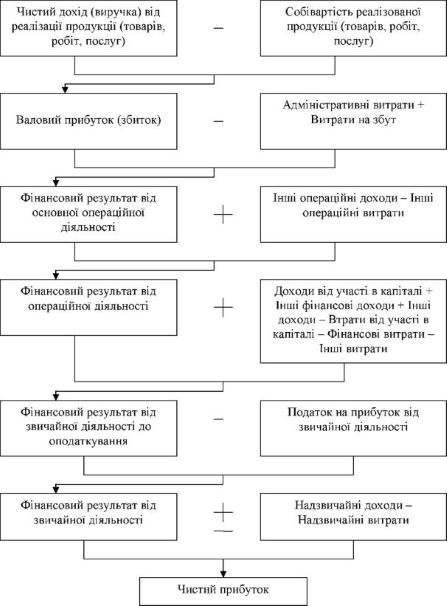

План
1. Економічний зміст і функції прибутку підприємства.
2. Механізм формування прибутку підприємства.
3. Порядок розподілу прибутку підприємства.
1. Економічний зміст і функції прибутку підприємства
У здійсненні виробничо-фінансової діяльності підприємства беруть участь різноманітні фактори: трудові, фінансові, матеріальні. Метою кожного суб’єкта господарювання є досягнення якомога ефективнішого використання задіяних у його діяльності ресурсів. Кінцеву грошову оцінку різних сфер діяльності підприємства отримують через систему показників, що характеризують фінансовий результат.
Фінансовий результат - це економічний підсумок виробничої діяльності підприємства, виражений у вартісній (грошовій) формі. Кінцевий фінансовий результат діяльності підприємства - це прибуток (збиток) звітного періоду, обчислений з врахуванням всіх доходів та витрат (окрім податків) підприємства. Цей показник визначається як сальдо за всіма доходами та витратами за різними видами діяльності підприємства. Визначення фінансового результату діяльності підприємства
Фінансовий результат (прибуток, збиток) = Доходи - Витрати
Показники фінансових результатів характеризують абсолютну ефективність господарювання підприємства. Основні показники фінансових результатів діяльності підприємства представлені у формі № 2 «Звіт про фінансові результати (Звіт про сукупний дохід)».
У разі перевищення доходів звітного періоду над витратами звітного періоду підприємство отримує прибуток. У випадку ж перевищення витрат над доходами звітного періоду фінансовим результатом діяльності підприємства є збиток.
Кінцева мета діяльності підприємства в ринкових умовах - отримання прибутку. У ринковій економіці прибуток виступає орієнтиром підприємницької діяльності. Прибуток формує основу економічного розвитку підприємства та є джерелом збагачення його власників. Тому доречно стверджувати, що прибуток водночас виступає і метою, і умовою господарської діяльності підприємств. По-перше, він характеризує ефективність використання ресурсів, тобто є показником фінансової результативності всіх видів діяльності підприємства. По-друге, він виступає джерелом розвитку як підприємства, так і держави. Отриманий прибуток підприємства, що залишився у його розпорядженні, використовують на фінансування діяльності, капітальних вкладень, інвестицій. Водночас прибуток є джерелом формування доходів бюджетів різних рівнів.
Прибуток – це позитивний кінцевий фінансовий результат діяльності підприємства, що визначається як різниця між загальною сумою доходів і витрат на виробництво й реалізацію продукції.
Найповніше економічна сутність прибутку підприємства виявляється через виконувані ним функції.
Основними функціями прибутку підприємства є:
1. Оцінювальна функція прибутку полягає в тому, що отриманий прибуток вимірює успіх діяльності підприємства. Ця функція допомагає підприємствам контролювати ефективність використання ресурсів. Попри те що прибуток є абсолютним показником, його можна використовувати для вимірювання ефективності діяльності підприємства. Тимчасом за інших рівних умов діяльність підприємства можна вважати ефективнішою, якщо його сукупні витрати забезпечують більший прибуток або якщо ця сума прибутку отримана з мінімальними витратами.
2. Стимулююча функція прибутку полягає в тому, що він є винагородою власникам капіталу, джерелом матеріального заохочення працівників підприємства, фінансовою основою розвитку підприємства. Прибутку належить вагома роль у системі внутрішніх джерел формування фінансових ресурсів підприємства - чим більша сума нерозподіленого прибутку, тим меншою є потреба в залученні коштів із позикових джерел, тим вбачається рівень його самофінансування і фінансової стійкості, що становить основу розвитку підприємства.
3. Зміст розподільної функції прибутку полягає в тому, що отриманий прибуток є джерелом формування доходів бюджету. За рахунок прибутку формується доходна частина державного та місцевих бюджетів - через систему податків і зборів, що сплачуються підприємствами з прибутку.
Прибуток підприємства характеризується не тільки своєю всебічною роллю, а й різноманітністю його видів.
Класифікація прибутку підприємства:
1. За відображенням у «Звіті про фінансові результати (Звіті про сукупний дохід)»:
- валовий прибуток;
- фінансовий результат (прибуток, збиток) від операційної діяльності;
- фінансовий результат (прибуток, збиток) до оподаткування;
- чистий фінансовий результат (прибуток, збиток).
2. За джерелами утворення:
- прибуток від реалізації продукції;
- прибуток від реалізації активів;
- прибуток від позареалізаційних операцій.
3. За джерелами формування прибутку від основних видів діяльності підприємства:
- прибуток від операційної діяльності;
- прибуток від інвестиційної діяльності;
- прибуток від фінансової діяльності.
4. За характером оподаткування прибутку:
- прибуток, що підлягає оподаткуванню;
- прибуток, що не підлягає оподаткуванню.
5. За періодом формування прибутку:
- прибуток попереднього періоду;
- прибуток звітного періоду;
- планового періоду.
6. За характером використання прибутку:
- нерозподілений (капіталізований) прибуток;
- прибуток, що підлягає розподілу.
7. Залежно від впливу інфляції:
- номінальний прибуток;
- реальний прибуток.
Отже, прибуток є важливим джерелом наповнення фінансових ресурсів підприємства, одним із найважливіших економічних показників діяльності підприємства. За рахунок прибутку підприємство виконує свої зобов’язання перед бюджетом, банками, іншими підприємствами та організаціями. Прибуток є показником, що характеризує рівень його ділової активності, фінансового благополуччя.
Головним джерелом зростання прибутку є зниження собівартості продукції і підвищення її якості. При одному і тому ж обсязі реалізованої продукції і рівні оптових цін прибуток тоді більший, коли нижча собівартість реалізованої продукції.
Збільшення прибутку відбувається також, коли збільшується обсяг реалізованої продукції при однаковій собівартості та оптових цінах. У цьому випадку зростання прибутку може супроводжуватися зниженням ефективності роботи підприємства.
Крім названих вище факторів (росту продуктивності праці, підвищення якості продукції, зменшення витрат виробництва), на прибуток шахти в значній мірі впливає рівень втрат робочого часу від простоїв і аварій. Тому важливим є підвищення рівня технічного стану машин і обладнання за рахунок покращення ремонтних робіт, підвищення кваліфікації обслуговуючого персоналу, а також забезпечення ритмічної роботи транспорту.
Зростання прибутку є підґрунтям для самофінансування, розширеного відтворення, вирішення соціальних проблем на підприємстві. Тому кожне підприємство з метою забезпечення прибуткової діяльності мусить неабияку увагу приділяти плануванню та формуванню прибутку.
2. Механізм формування прибутку підприємства
Теоретичною основою аналізу прибутку підприємства є прийнята для всіх підприємств, незалежно від форми власності, єдина модель формування прибутку.
Формування прибутку підприємства відображається у «Звіті про фінансові результати (Звіті про сукупний дохід)», де розкривається інформація про доходи, витрати, прибутки і збитки, інший сукупний дохід та сукупний дохід підприємства за звітний період.
Модель формування прибутку (відповідно до форми № 2 «Звіт про фінансові результати (Звіт про сукупний дохід)» охоплює декілька етапів:
1 етап. Визначення валового прибутку від реалізації продукції. Валовий прибуток від реалізації встановлюється як різниця між виручкою від реалізації продукції у відпускних цінах підприємства (без ПДВ, акцизного податку та інших непрямих податків) і затратами, що включаються у виробничу собівартість. До собівартості продукції при визначенні валового прибутку включаються прямі матеріальні витрати, прямі витрати на оплату праці 90 і нарахування, а також непрямі загальновиробничі витрати. Валовий прибуток є показником ефективності роботи виробничих підрозділів підприємства.
2 етап. Визначення прибутку від операційної діяльності. Він установлюється як різниця між валовим прибутком та адміністративними витратами, витратами на збут та іншими операційними витратами. Прибуток від операційної діяльності є показником економічної ефективності основної діяльності підприємства, тобто виробництва та реалізації продукції (товарів, робіт і послуг).
3 етап. Результат (прибуток чи збиток) фінансової діяльності визначається шляхом додавання процентів до отримання, доходів від участі в інших підприємствах, інших операційних доходів та витрат, також від іншої реалізації.
4 етап. Визначення чистого прибутку (збитку) підприємства. Такий прибуток є показником економічної ефективності всієї господарської діяльності підприємства. Чистий прибуток звітного періоду визначається як різниця між прибутком до оподаткування та податку на прибуток підприємств.
Величина чистого прибутку підприємства поряд з іншими показниками фінансового стану дають загальну характеристику його діяльності. Підприємство зацікавлене не тільки отримати якомога більший прибуток, але й ефективно використати ту частину прибутку, що залишається у його розпорядженні. У збільшенні власних коштів за рахунок прибутку і криються успіхи чи невдачі підприємства.
Сучасна модель формування і розподілу прибутку підприємств відображає основні риси системи розподільних взаємовідносин між державою та підприємствами. Для підприємства податок на прибуток підприємств є неодмінним елементом у процесі формування капіталу підприємства. Сума податку на прибуток підприємств може бути зменшена за рахунок покращення системи внутрішньовиробничого планування та контролю за витратами, шляхом вдосконалення діяльності та вибору облікової політики підприємства.
3. Порядок розподілу прибутку підприємства
Прибуток є важливим показником ефективності виробничо-господарської діяльності, а також джерелом формування централізованих і децентралізованих фінансових ресурсів.
Отриманий підприємством прибуток може бути використаний для задоволення різноманітних потреб:
1. По-перше, він спрямовується на формування фінансових ресурсів держави, фінансування бюджетних видатків. Це досягається вилученням у підприємств частини прибутку в державний бюджет.
2. По-друге, прибуток є джерелом формування фінансових ресурсів самих підприємств і використовується ними для забезпечення господарської діяльності.
Отже, отриманий підприємством прибуток є об'єктом розподілу.
Етапи розподілу прибутку:
Перший етап - це розподіл загального прибутку. На цьому етапі учасниками розподілу є держава й підприємство. У результаті розподілу кожний з учасників одержує свою частку прибутку. Пропорція розподілу прибутку між державою і підприємствами має важливе значення для забезпечення державних потреб і потреб підприємств. Це одне з принципових питань реалізації фінансової політики держави, від правильного вирішення якого залежить розвиток економіки в цілому.
Пропорції розподілу прибутку між державою (бюджетом) і підприємством складаються під впливом кількох чинників. Істотне значення при цьому має податкова політика держави щодо суб'єктів господарювання. Ця політика реалізується в кількості податків, що сплачуються за рахунок прибутку, у визначенні об'єктів оподаткування, ставок оподаткування, у порядку надання податкових пільг.
Другий етап - це розподіл і використання прибутку, що залишився в розпорядженні підприємств після здійснення платежів до бюджету. На цьому етапі можуть створюватися за рахунок прибутку цільові фонди для фінансування відповідних витрат.
З реформуванням бухгалтерського обліку і фінансової звітності відповідно до міжнародних стандартів відбуваються зміни у розподілі та використанні прибутку підприємств.
Чистий прибуток, одержаний після сплати податків, залишається у повному розпорядженні підприємства, яке відповідно до установчих документів визначає напрями його використання.
Головні принципи розподілу чистого прибутку закріплені статутом підприємства. Фактично розподіл здійснюється відповідно до поточної та стратегічної політики, що визначається підприємством.
Завданням фінансового менеджменту є пошук оптимальних шляхів розподілу прибутку.
Як правило, одна частина прибутку використовується на виплату дивідендів, а друга - на розширення та оновлення виробництва, фінансові інвестиції, придбання нерухомості, створення та поповнення резервних фондів підприємства, соціальні програми.
Зокрема, сума прибутку спрямовується:
- на виплату дивідендів;
- на поповнення статутного капіталу;
- на поповнення резервного капіталу.
Нерозподілений прибуток є однією з найважливіших частин власного капіталу.
Нерозподілений прибуток - це частина чистого прибутку товариства, яка залишається у розпорядженні підприємства для виплати доходів власникам у вигляді дивідендів, формування резервного капіталу, поповнення статутного капіталу та на інші потреби.
Питання для самоконтролю:
1. Розкрийте сутність прибутку підприємства.
2. Охарактеризуйте функції, які виконує прибуток.
3. Наведіть класифікацію прибутку підприємства.
4. Охарактеризуйте модель формування прибутку підприємства.
5. Розкрийте основні етапи розподілу прибутку підприємства.
Література:
1. Аранчій В.І. Фінанси підприємства: навчальний посібник / В.І. Аранчій, В.Д. Чумак, Л.В. Бражник. – Полтава: РВ ПДАА, 2018., с.72-87.
2. Фінанси підприємств: навч. посібник / За ред. Г. Я. Аніловської, І. Б. Висоцької. Львів: ЛьвДУВС, 2018., с. 86-102.